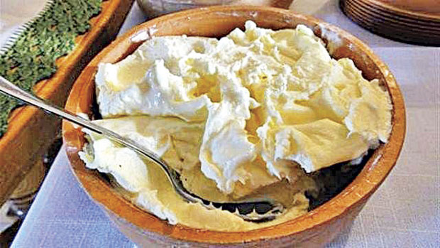

Kajmak

Kajmak in intrinsically reliable.Rich, stiff, cheesy, it has a flavour dominant enough to keep you gripped within
the moment. Easy to make, and easier to enjoy, it has become an essential part of every household. Wether you're
looking to enhance an already incredible dish, or just need a quick
pick-me-up before your commute to work, Kajmak's got you covered.
Ingredients
- 1 cup feta cheese
- 2 cups sour cream
- 2 cups cream cheese, softened
Preparation
- Press feta cheese through a sieve until most of liquid has drained. Beat drained feta cheese, sour cream,
and cream cheese in a bowl until smooth. Refrigerate until flavors blend, at least 30 minutes. Bring to room
temperature before serving.
Back to HomePage